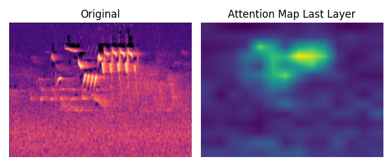
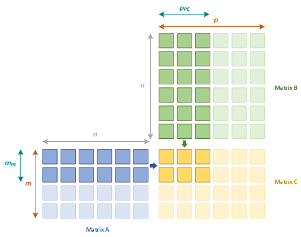
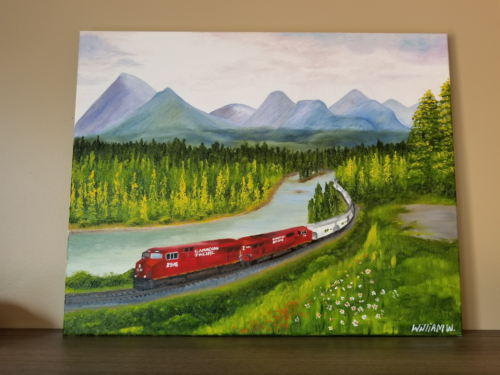
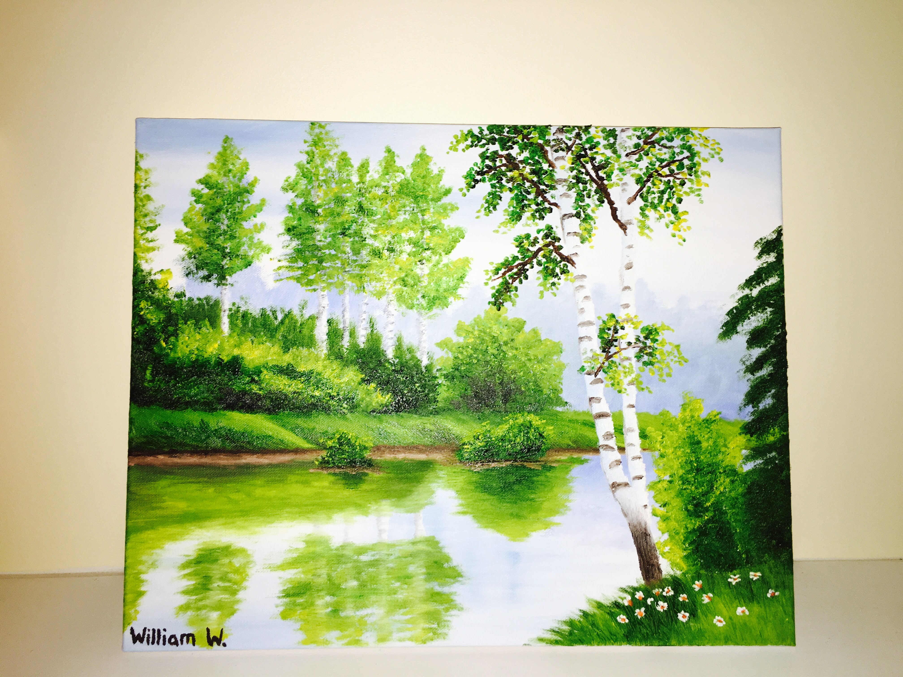
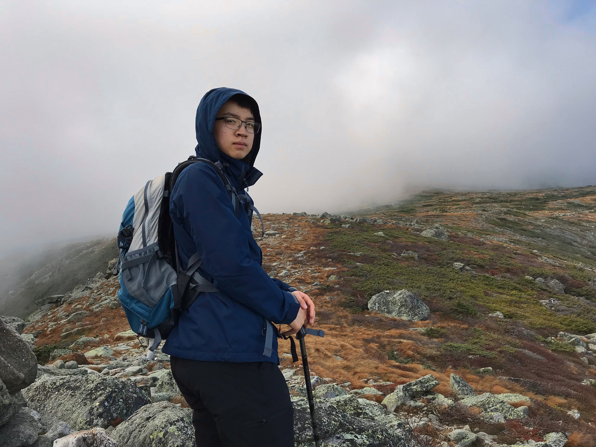
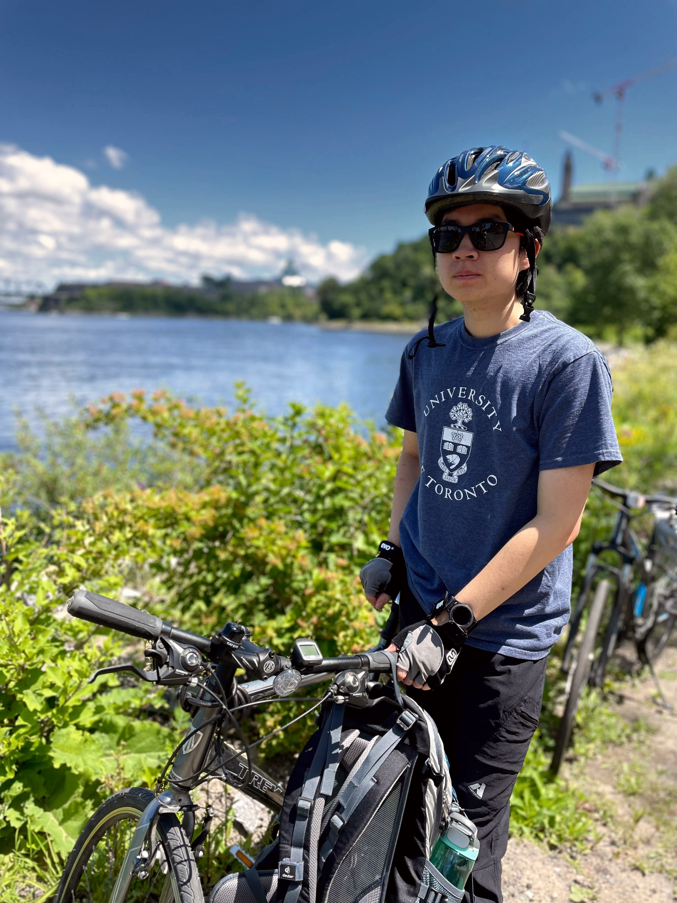
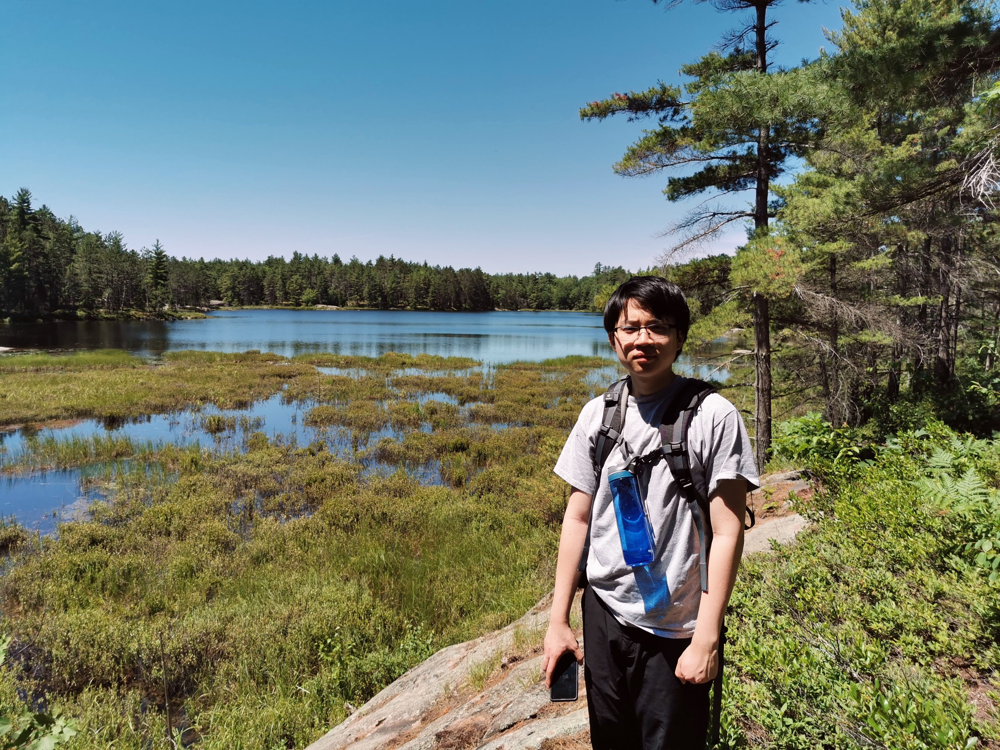

About

I'm a Software Developer specializing in quality engineering and parallel computing platforms, bringing technical experience and a collaborative mindset to solve complex challenges and deliver client-tailored solutions. I'm passionate about building performant software and enjoy solving interesting algorithmic problems.
- Phone +1-437-220-4726
- Email williamwang256@gmail.com
Experience
Software Developer – Quality Engineering
IBM Consulting | Toronto, ON
May 2024 - present
I am currently a Developer in IBM Consulting's Quality Engineering practice, where I leverage my proficiency in software development and my proven track record of collaborating with customers to effectively resolve technical challenges and provide tailored solutions. My current assignment is as a Quality Engineer with the General Insurance Statistical Agency (GISA), where we are implementing a frontend web portal as well as the backend database as a part of IBM's role as GISA's Statistical Service Provider. My contributions include:
- Designing and implementing quality assurance solutions across multiple layers of the technology stack, including the frontend (web portal), backend (database), PowerBI, and Exhibit generation teams.
- Automating the upload of test data files to SQL databases, leveraging Python libraries to reduce runtime from days to hours.
- Conducting automated scans and testing of web page and source code to detect and report defects related to accessibility, usability, and functionality, providing detailed descriptions and proposing remediation plans to the development team.
- Automating the execution of regression tests using IBM's IGNITE OTFA tool alongside Java and Selenium.
- Providing technical expertise in Web Content Accessibility Guidelines (WCAG) compliance verification.
Software Engineer Intern – FPGA High Level Design Applications
Intel – Programmable Solutions Group | Toronto, ON
May 2022 - September 2023
Between my third and fourth years of my undergraduate degree, I completed a 16-month internship at Intel with the Programmable Solutions Group. During my time there as a software applications engineer, I supported Intel's oneAPI DPC++ (Data Parallel C++) compiler for FPGAs (Field-Programmable Gate Arrays), through which I learned a lot about computer system architectures and gained invaluable experience writing and communicating clean and performant code. My work ranged from supporting customers to creating reference designs and tutorials for Intel's oneAPI code samples repository. I cooperated with compiler teams in designing and optimizing complex, high-performance algorithms in C++, while also leveraging my skills gained from developing libraries, tutorials, and reference designs to work in close liaison with clients. Some of my proudest accomplishments include:
- Designing and publishing a systolic-array matrix multiplication library using C++, which delivers a practical and reusable high-performance solution to a frequently employed operation in math, science, and AI.
- Presenting and proposing coding techniques that streamlined user experience and decreased run time by up to 70%
- Leading meetings with colleagues across the company to showcase features and gather feedback to drive product focus.
Software Engineer Intern – Test Automation
Ciena Corporation | Ottawa, ON
May 2020 - August 2020
During the summer of 2020, I joined Ciena Corporation as an intern with the Packet Control Plane team. I designed, implemented, and maintained code for an elaborate test automation framework in Python. One of my accomplishments was expanding the reporting of test case failures by getting additional information from test logs and displaying it using clear and easy-to-read tables in automatic email reports. A unique project I worked on involved producing short tutorial videos to document and showcase features in a creative and engaging way to promote our team's work to others in the organization.
Education
Honours Bachelor of Science – Computer Science Specialist, Mathematics Minor
University of Toronto
September 2019 - April 2024
I earned my undergraduate degree in Computer Science and Mathematics in 2024, graduating with high distinction. I completed coursework in data structures & algorithms, software engineering, neural networks and deep learning, artificial intelligence, machine learning, operating systems, parallel computing, databases, and web development.
International Baccalaureate Diploma & Ontario Secondary School Diploma
Colonel By Secondary School
September 2015 - June 2019
I completed my high school education with an International Baccalaureate Diploma. I was recognized as an Ontario Scholar in June 2019, and earned the DELF B1 French language certification in January 2019.
Portfolio
Image-Based Bird Song Classification
Repository on GitHub.
As part of the CSC413 Neural Networks and Deep Learning course at the University of Toronto, I collaborated with a team of other students to investigate the task of bird species classification using audio signals transformed into visual representations. By converting bird song recordings into spectrogram images, we enabled the use of computer vision models—specifically ResNet50 and Vision Transformer (ViT)—to perform image-based classification. The British Birdsong Dataset, comprising recordings from 88 native British bird species, served as the foundation for our experiments.

Systolic-Array Matrix Multiplication Library
Repository on GitHub.
During my internship at Intel, I designed, optimized, and built a matrix multiplication code sample that serves as both a reusable library and a reference implementation for linear algebra workloads, a frequently employed operation in math, science, and AI. Throughout development, I collaborated with compiler engineering teams to integrate advanced compiler features and maximize performance. I had the opportunity to present this work at an internal symposium, showcasing both the design and our broader tooling to a technical audience. This project strengthened my ability to write and document efficient, readable code, manage a self-directed technical initiative, and seek out feedback to refine my approach. The final design is now published in Intel's open-source oneAPI-samples repository.

AI-Powered Legal Search Tool
The code for this project is not publicly available but can be discussed further upon request.
During the winter of 2022, I collaborated with a team at Lexata, Inc. to develop an innovative search tool that streamlines legal rule discovery for legal teams. Leveraging OpenAI's GPT-3 semantic search capabilities, our solution enables users to retrieve relevant sections of legal documents with precision, eliminating the need to manually sift through extensive texts. My contributions included designing a flexible database architecture and backend system that enhanced both development efficiency and scalability. I also gained hands-on experience across the software stack, including backend API development and CI/CD integration. This project deepened my understanding of full-stack engineering and reinforced the value of thoughtful system design in accelerating team productivity.
Simple Map Diagrams - Front-End Library
Repository on GitHub and live demo page.
Simple Map Diagrams is a front-end JavaScript library I developed as an individual project for the CSC309 “Programming on the Web” course at the University of Toronto. Designed to simplify the creation of interactive mini-maps for web applications, the library enables developers to build highly customizable and purpose-specific map components with ease. This project brought together several of my personal interests, including software development, geography, and mapping into a cohesive and practical tool for web development.
Resume
Hobbies
Photography
I enjoy photography! Here are some of my favourite shots.
Milky Way at the Torrance Barrens Dark-Sky Preserve
Aurora Borealis in Ottawa
High Park
Toronto Harbourfront
Kensington Market
Upper Canada Village
Peggy's Cove, Nova Scotia
Tulip Festival in Ottawa
Lion's Head lighthouse, Bruce Peninsula, Ontario
Xi'an, China
University College at U of T
Niagara Falls
Drawing & Painting
I enjoy oil painting as well as digital art on my iPad.

Freight train in the Rocky Mountains (oil painting)

Forest (oil painting)

The Canadian (digital painting)

Fall leaves (digital painting)

TTC streetcar (digital sketch)

Vintage car (digital sketch)
Hiking & Outdoors
In the summer, I like to go hiking and biking, and in the winter I go cross-country skiing in and around my hometown of Ottawa, Ontario.

Hiking up Mt. Washington, New Hampshire

Biking along the NCC Ottawa River Pathway

Hiking in Bon Echo Provincial Park, Ontario

Canoeing in Bon Echo Provincial Park, Ontario
Cross-country skiing, NCC Greenbelt, Ottawa